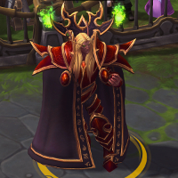
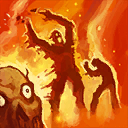
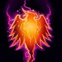
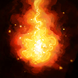
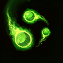

Kael'thas
Welcome to our Kael'thas guide for Heroes of the Storm. Here you will learn everything you need to know in order to play Kael'thas in a competitive environment, whether you play on your own or with a team.
Flamestrike Build
| Level 1 | Level 4 | Level 7 | Level 10 | Level 13 | Level 16 | Level 20 |
|---|---|---|---|---|---|---|
|  |  |  |
The Flamestrike Build focuses on bolstering the damage output and utility of Flamestrike, providing Kael'thas with even stronger AoE damage. It is important for Kael'thas to try to complete the quest portion of Convection Icon Convection as early as possible, as the reward will grant a massive power spike to Flamestrike. Enemy teams will often try to focus Kael'thas down before he is able to finish his Convection quest, so be sure to play cautiously until it is completed. Empowering Flamestrike with Verdant Spheres Icon Verdant Spheres will make it much easier for players to strike multiple enemy Heroes, making great use of both Burned Flesh Icon Burned Flesh and Flamethrower Icon Flamethrower.
Living Bombs Build
| Level 1 | Level 4 | Level 7 | Level 10 | Level 13 | Level 16 | Level 20 |
|---|---|---|---|---|---|---|
|  |
The Living Bombs Build is an effective alternative to the Flamestrike Build, primarily when Kael'thas may find himself having a hard time landing casts of Flamestrike on his targets. The "targeted" component to Living Bombs makes it much easier to guarantee damage, especially against teams with multiple highly mobile targets that are difficult to hit with Flamestrike. Kael'thas will need to play cautiously with a strong awareness of his positioning since the cast range of Living Bombs is somewhat limited. Try to cast Living Bombs on targets of high priority (when possible), but do not be afraid to cast in onto the enemy frontline as, many times, they may carry the explosion back into their own team, further spreading the bombs.
Go Back